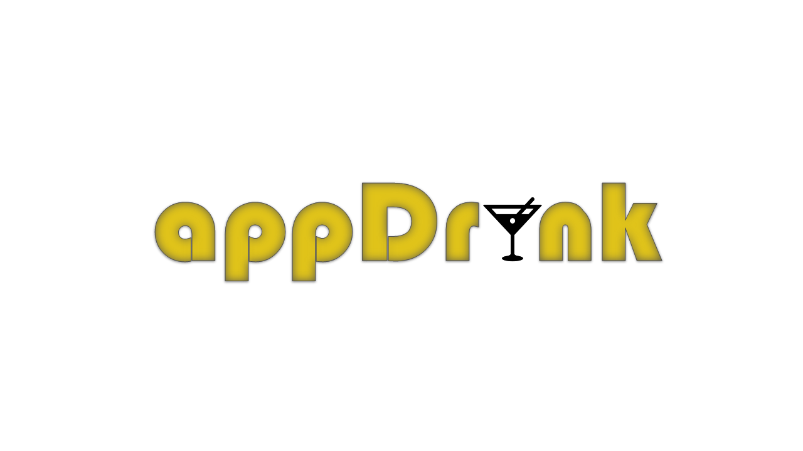

<script type="module" src="https://cdn.jsdelivr.net/npm/@ionic/core@4.7.4/dist/ionic/ionic.esm.js"></script>
<script nomodule src="https://cdn.jsdelivr.net/npm/@ionic/core@4.7.4/dist/ionic/ionic.js"></script>
<link rel="stylesheet" href="https://cdn.jsdelivr.net/npm/@ionic/core@4.7.4/css/ionic.bundle.css"/>

<ion-toolbar color="black" >
  <ion-title selfie color="mostarda"> Sobre </ion-title>
</ion-toolbar>

<ion-content fullscreen padding scroll-y="false">
  <ion-slides>

    <ion-slide>
      
      <h2><b>Bem-vindo ao appDrink </b></h2>
      <p> Aqui você encontra as melhores bebidas prontinhas para seu role.</p>
      <p style="text-align: center"><b> Prático e Ágil !</b></p>
    </ion-slide>

    <ion-slide>
      
      <h2><b>O que é o appDrink ?</b></h2>
      <p>O appDrink é um aplicativo voltado para adegas, onde você poderá montar seu kit de bebidas com apenas alguns cliques.</p>
      <p>O usuário poderá montar seu pedido com as opções de bebidas de todos os tipos, gelos, copos e muito mais. Podendo escolher a quantidade, o tamanho e opções de pagamento.</p>
      <p style="text-align: center"><b>Basta baixar o app na playstore e efetuar seu login e pronto !</b></p>   
    </ion-slide>

    <ion-slide>
      
      <h2><b>Qual o principal objetivo ?</b></h2>
      <p>O principal objetivo desse aplicativo é que possa facilitar o role de todos, agilizando o seu pedido, tendo a opção de buscar os produtos do pedido direto na adega ou que entregue até o local onde ocorrerá o evento, apenas informando o endereço e a data que queira que seja entregue.</p>
      <p style="text-align: center"><b>Não perca mais tempo, a agilidade está em suas mãos ! </b></p>
    </ion-slide>

    <ion-slide>
      
      <h2><b>Pronto para desfrutar do appDrink ?</b></h2>
      <ion-button fill="clear" [routerLink]="['/']">Continue <ion-icon slot="end" name="arrow-forward"></ion-icon></ion-button>
    </ion-slide>

  </ion-slides>
</ion-content>
